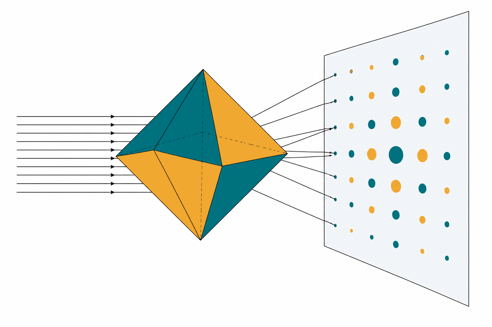

AMCLab
AMCLab


2026 · Low-fluence imaging
Detecting nanoparticles with 4D-STEM
Comparing detection strategies for beam-sensitive nanoparticle measurements.
Electron diffraction, electron optics and open-source microscopy tools at UCL Chemistry.

We develop electron diffraction, imaging and simulation methods to reveal structure in small crystals and beam-sensitive materials.
Our work connects the experiment, the microscope and the analysis. We combine electron crystallography and coherent imaging with models of electron optics and detector response, and build open-source tools that make microscopy easier to learn and use.
Discover our research2026 · Low-fluence imaging
Comparing detection strategies for beam-sensitive nanoparticle measurements.
2023 · Simulation & teaching
An interactive electron-optics simulation for teaching and training.
2023 · Image processing
Python tools for processing, analysing and presenting transmission electron microscopy images.
Interested in a research project, a collaboration or a microscopy problem? Tell us about the question you would like to explore.
Join us & get in touch